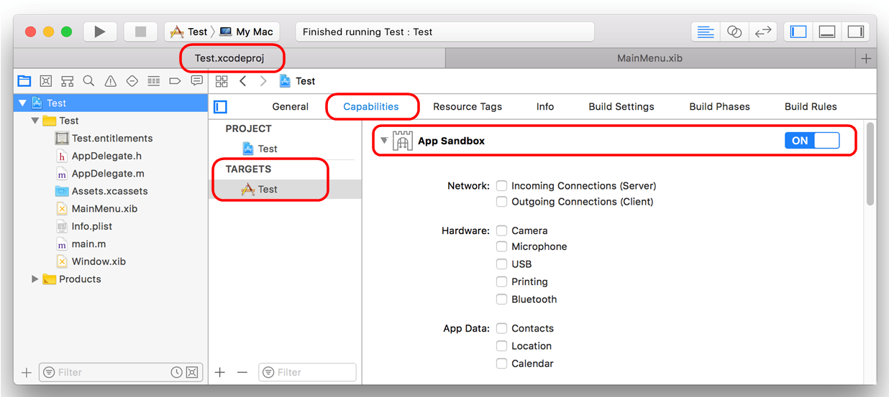
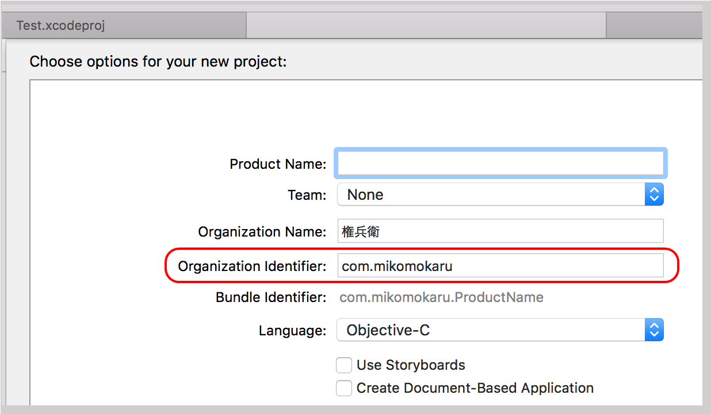
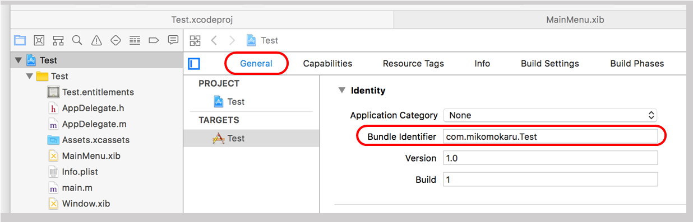
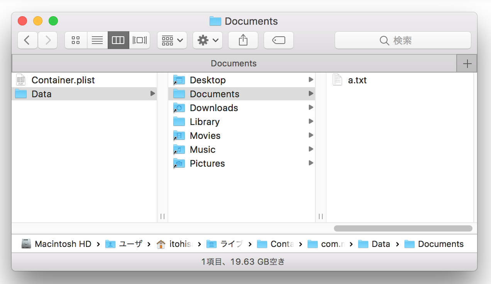
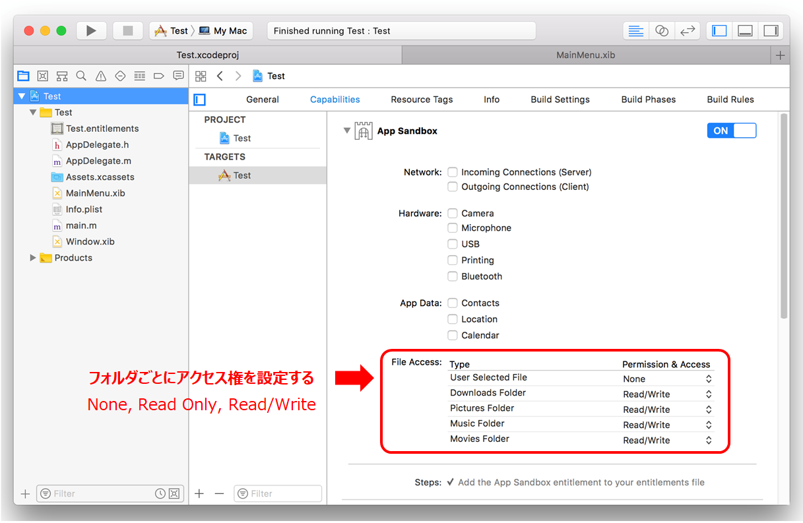
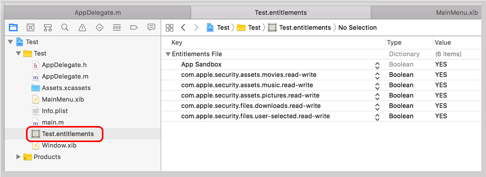

App Sandboxについて 〜ファイルのアクセス権〜
App Sandboxを有効にするとアプリケーションが利用できる資源（ファイルシステム、ネットワーク、プリンタやカメラなどのデバイス）に対してアクセスを制御することができる。セキュリティレベルを高めるために通常は有効にすべきである。
Sandboxの設定方法
Xcode のプロジェクトの設定
TARGETS → Capabilities → App Samdbox ON

ホームディレクトリ
AppSandboxをONのした場合ホームディレクトリはアプリケーションごとに固有の領域が割り当てられる。ホームディレクトリはアプリケーションを最初に実行した時点で自動的に作成される。
/Users/[user]/Library/Containers/[bundleIdentifier]/Data
userは、ログインユーザ名。bundleIdentifierは、アプリケーションを識別するためのユニークなID。一般的にはユーザドメインを逆に記述したものにプロジェクト名を追加したものになる。（ユーザドメインはメールアドレスで代替できるが文字列にアンダーバーは使用不可）
このIDは、プロジェクトの新規作成時に指定できる。

プロジェクト作成後に変更は、プロジェクトの設定で行うことができる。

ホームディレクトリ以下のディレクトリ構造
Documents, Library（システムファイルを格納する領域）が固有のフォルダ。Desktop, Downloads, Movies, Music, Pictures は通常のユーザホームディレクトリにあるフォルダのエイリアスになっている。

アクセス可否
ホームディレクトリ直下とDocumentsは、無条件にディレクトリ、ファイルの作成、削除およびファイルの読み書きができる。
Downloads, Movies, Music, Pictures はAppSandoboxのFileAccessの設定によりディレクトリ、ファイルの作成、削除およびファイルの読み書きができる。設定を変更しビルドすると「プロジェクト名.entitlemants」ファイルが作成され、実際にはこれによりアクセスが制御される。

User Selected File の設定については、NSOpenPanel / NSSavePanel の「AppSandboxの設定について」を参照のこと。
entitlemantsファイル
このファイルを直接編集することも可能

注意
AppSandoboxをONにしていると Desktopフォルダのファイルにアクセスすることはできない。ホームディレクトリからDesktopフォルダは見えているので勘違いしやすい。